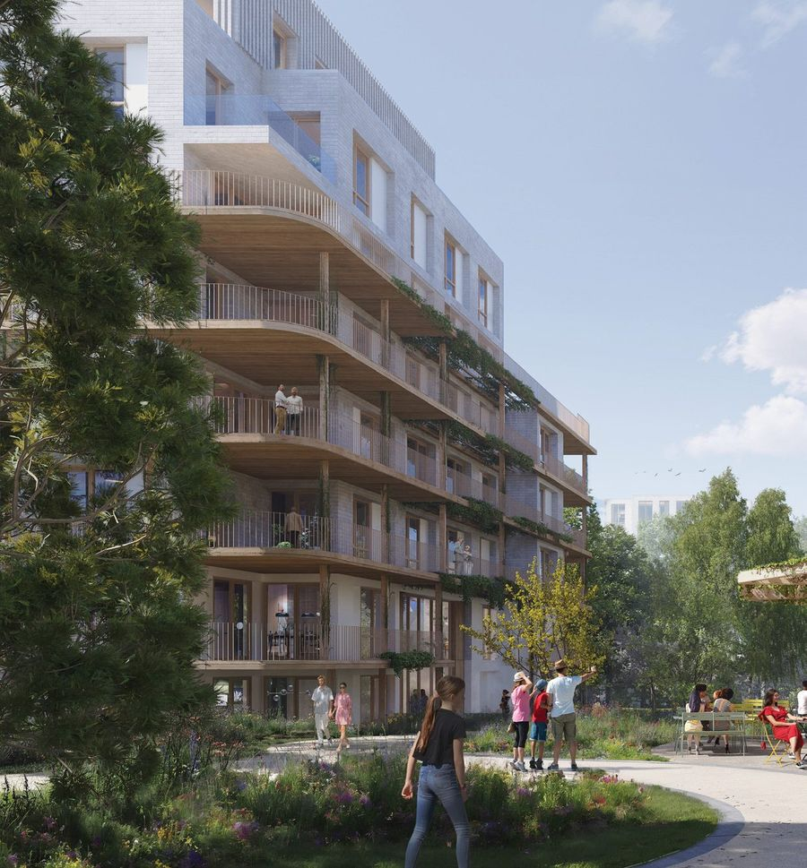
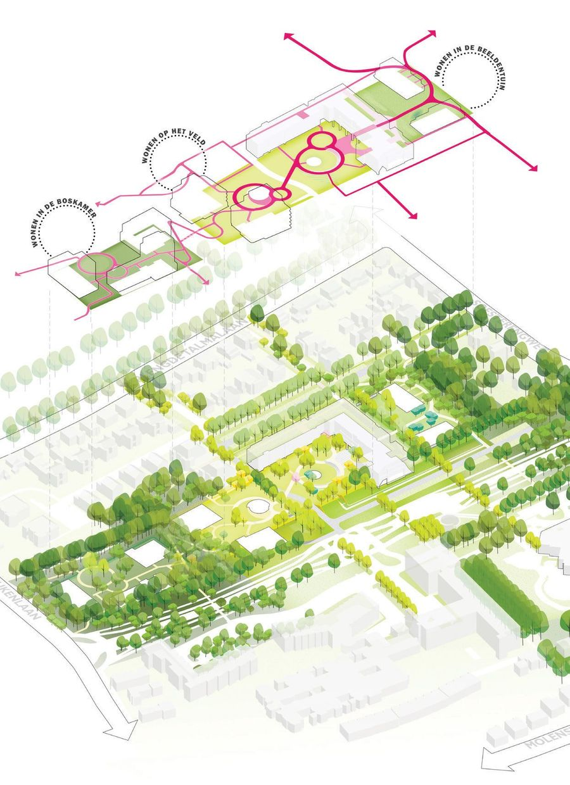
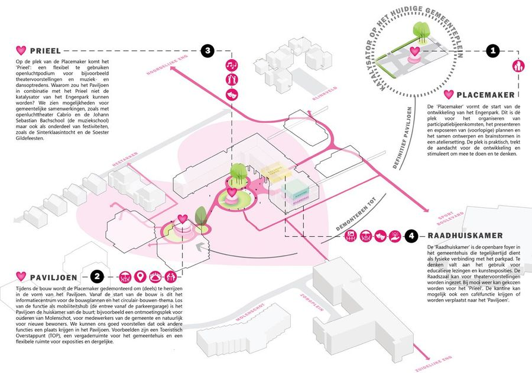
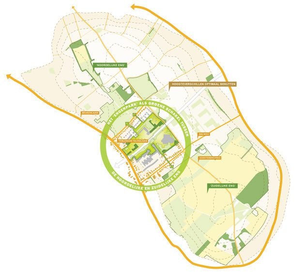
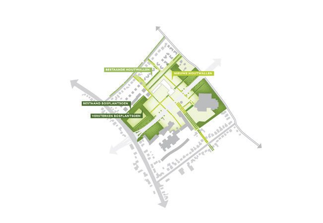
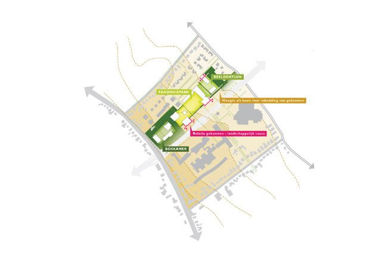

A fragmented terrain in Soest pulled back together by a single landscape framework.

Within the landscape of Soest, the task was to transform a fragmented and intersected terrain into something coherent — a place where the old and the new sit together rather than side by side.
At the heart of the site we introduce a guiding framework: an organising principle that unifies the diverse elements. Designed to a human scale, this landscape framework builds a working relationship between the architecture and the natural world.
Further into the project, the collective woodland and the municipal park come together to define the destination — nature and community merged into a single haven in the centre of Soest.
- Assignment
- Stedenbouw
- Firm
- Buro Sant en Co
- Design
- 2023
- Status
- Tender
- Collaborations
- AM, Gemeente Soest
- Team
- Paul Plambeck, Merel Cozlijsen



